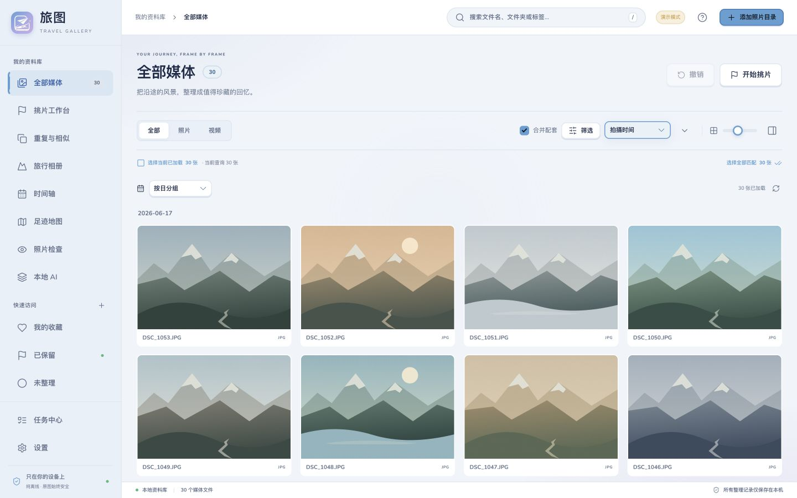

找到想找的那一张
照片与视频在同一图库浏览。按时间、格式、评分和标签筛选，保存你常用的规则。
组合筛选 · 智能筛选
日常整理，刚刚好
把常用的事做好，让每一趟旅行都有迹可循。
照片与视频在同一图库浏览。按时间、格式、评分和标签筛选，保存你常用的规则。
组合筛选 · 智能筛选精确重复、视觉相似和连拍分别分组。逐张对照，把真正喜欢的瞬间留下来。
SHA-256 查重 · 相似与连拍旅行相册、时间轴、旅行故事和离线足迹地图，重新串起风景与日常。
旅行相册 · 离线地图复制导出前先预演数量、空间和文件冲突。按需附带评分、标签和备注 XMP。
导出预演 · 原文件保留专注于眼前这一张
不用反复打开文件夹。沉浸式挑片与多图对比，让每一次选择更直接。
 待你发现
交互示例
待你发现
交互示例
点击试试，或聚焦按钮后按 P / X / F。仅使用示例插画。
回忆属于你
无需登录云端账号。索引与整理记录存入本地资料库，原始照片和视频留在你的硬盘。
核心浏览与整理离线工作，足迹地图不请求在线地图。
查重提供分组与对照，不自动删除原图或按 AI 结果淘汰。
相关提示默认关闭，需要时自行导入独立模型包。
从一个文件夹开始
相机、手机或外接硬盘，添加已有目录就能开始。
旅图建立本地索引，原文件留在原来的位置。
浏览、评分和标签，慢慢理清一趟旅行。
创建相册与足迹；需要分享时，预演后再复制导出。
旅图 Travel Gallery · 你的本地旅行影像资料库
选择你的平台，在 Releases 获取可用版本当前为未获系统信任签名的公开体验包。首次启动请参照安装说明，并核对随包 SHA256SUMS.txt。
JPG / JPEG / HEIC / HEIF 与 MOV 的 Apple 内容标识唯一匹配时自动配对，默认「合并配套」显示 LIVE · 2 卡片。只有同目录同名时需在「照片详情 → 配套素材」确认配对。大图左上角显示小型 LIVE 标识， 鼠标移入静音播放一次，移出立即停止并返回静态照片；停留不循环，再次移入才重播。也可用键盘 Enter / Space 或触屏轻点标识播放、停止。切图或关闭预览会停止播放；解码失败可重试或使用系统应用打开配套 MOV。 这是配套视频预览，不包含 Apple 原生 Live Photo 的按压与过渡效果。原文件保持独立，XMP 不参与配对， 当前不会自动导入其 IPTC 内容。导出时可同时复制已确认的配套文件，并另选生成旅图的标签、星级与备注 XMP。
添加来源会建立索引，原文件保留在原来的位置。挑片标记只更新本地记录；复制导出先提供预演，不自动按查重或 AI 结果删除原图。
桌面应用的核心功能在本地运行，无需云端账号。应用和可选模型需要提前下载；这个介绍网站本身通过 GitHub Pages 提供，需要网络访问。
当前 macOS 包使用 ad-hoc 完整性签名，未经过 Apple 公证；Windows 包未做 Authenticode 签名。请确认来自本仓库的 Releases，并核对 SHA-256。受组织策略管理的设备可能无法手动放行，具体步骤见安装说明。
不等于。资料库备份保存索引与整理记录，不包含原始照片、视频和独立模型包。请为原始媒体另行备份。